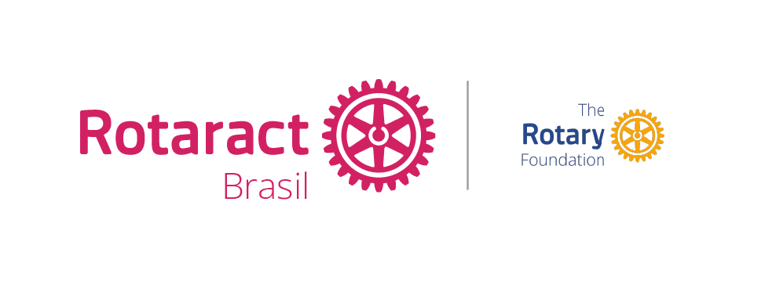

Total de contribuição - Área 31
⚠ Page ID associado por inferência de posição (alta confiança) — confira se o título dentro do gráfico bate com "Área 31".

Enviar meu projeto⚠ Page ID associado por inferência de posição (alta confiança) — confira se o título dentro do gráfico bate com "Área 31".